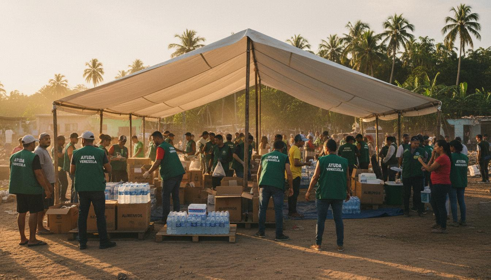
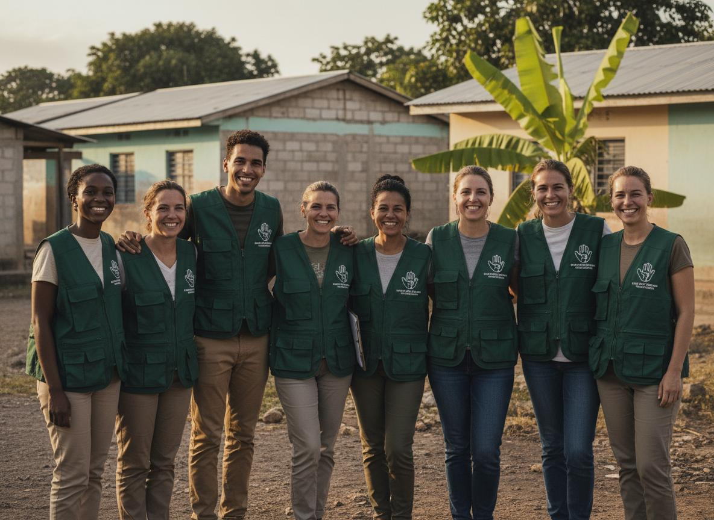

Uniendo voluntades, reconstruyendo hogares
Tu aporte marca la diferencia en la reconstrucción de familias afectadas.
Quiero Apoyar Ver más formas de ayudar →Canales oficiales verificados para donaciones nacionales e internacionales.
Donar AhoraCuentas bancarias verificadas
Somos una institución privada, sin fines de lucro, plural e independiente, constituida legalmente en el año 2015.
Nuestra misión es canalizar la solidaridad civil e internacional para brindar asistencia humanitaria de emergencia, rehabilitación, recuperación, apoyo psicosocial y reconstrucción comunitaria.
"Canalizar la solidaridad civil e internacional para brindar asistencia humanitaria de emergencia, rehabilitación, recuperación, apoyo psicosocial y reconstrucción comunitaria."

Junta Directiva
Elizabeth Martínez, María Alejandra Martínez, Yenkis Higuera y Elsa González
Ad honorem
Datos oficiales del doble sismo del 24 de junio de 2026 en el oeste de Caracas.
Fuente: Reportes oficiales de Protección Civil — Actualizado al 03 de julio de 2026
Se visualizarán las comunidades prioritarias atendidas por la fundación
El mapa interactivo muestra las comunidades prioritarias del oeste de Caracas atendidas por nuestra fundación en el marco de la emergencia.
Nuestro plan estratégico se divide en tres ejes de intervención para atender la emergencia de manera integral.
Operación de ollas comunitarias y comedores itinerantes, junto con la entrega de Kits de Supervivencia y Kits de Dignidad para la higiene de mujeres y niños.
Despliegue de Primeros Auxilios Psicológicos (PAP) dirigidos por profesionales y estudiantes de psicología para contener traumas colectivos.
Entrega de Kits de Reactivación (máquinas de coser, herramientas de construcción, licuadoras industriales) para que carpinteros, costureras y mecánicos recuperen de forma autónoma su economía.
Regístrate para apoyar nuestra labor. Puedes donar suministros, ofrecerte como voluntario o contribuir con fondos.
Lista de requerimientos urgentes para las comunidades afectadas:
Todas las donaciones son gestionadas bajo estrictas directrices contables de nuestro estatuto legal. Trabajamos con auditorías externas y publicamos informes periódicos de gestión.